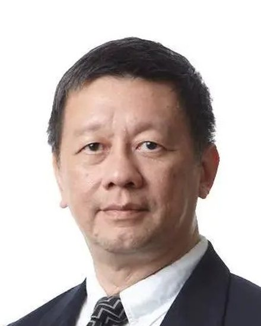
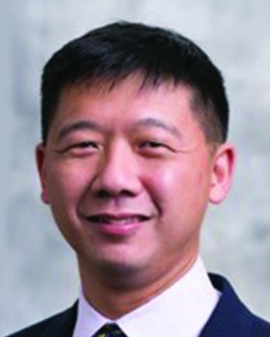
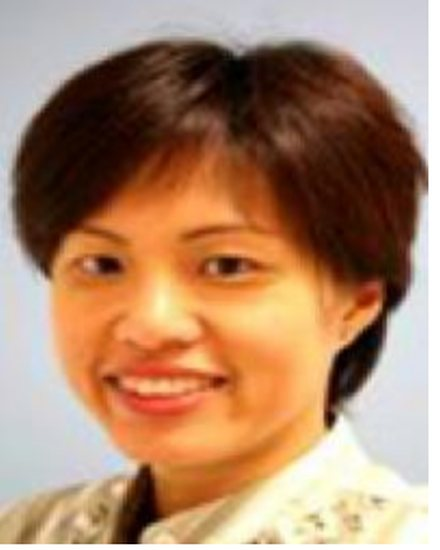
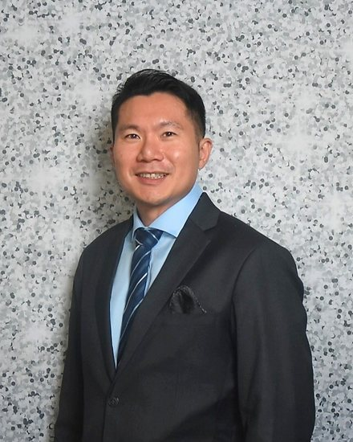
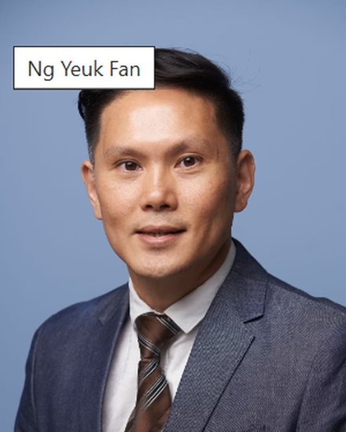
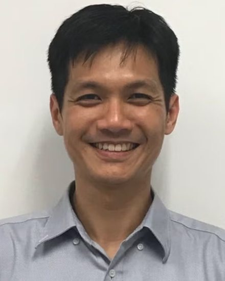

Who teaches you, and who trains beside you.
Twenty-four residents are in training, taught by faculty who sit inside the eight organisations you will rotate through. Two of those residents answer questions from applicants directly.
Programme leadership
Five people run the programme day to day. The two coordinators handle anything procedural and are the faster route for it.
-

A/Prof Jason YapProgramme Director
Click to view profile -
Dr Joshua Wong
Associate Programme Director
Click to view profile -
Dr Jeffery Cutter
Associate Programme Director
Click to view profile
- Programme Director
- A/Prof Jason Yap. Write to him about the specialty itself, about whether your background fits, and about anything you would rather not raise with your own department. jasonyap@nus.edu.sg
- Programme Coordinator
- Ms Fanny Yik. Applications, interview registration, rotation scheduling and documentation. fanny_fl_yik@nuhs.edu.sg
- Programme Coordinator
- Ms Reena Riana. Applications, interview registration, rotation scheduling and documentation. Reena_Riana_Bte_Jamil@nuhs.edu.sg
Two committees sit above the programme and are worth knowing by name, because they decide your progression. The Preventive Medicine Competency Committee reviews your portfolio each rotation, meets you six-monthly, and runs the R3 progression review. The Residency Advisory Committee, chaired by A/Prof Ng Wee Tong, receives the Competency Committee’s reports, approves an overseas Master of Public Health, and decides what happens if training is interrupted.
Names, roles, portraits and both coordinator addresses as published on the NUHS programme page; the Residency Advisory Committee chair from the Specialists Accreditation Board’s Preventive Medicine Specialty Training Requirements.
Core faculty
Teaching is not held in one department: the programme draws its faculty from across the eight participating organisations, so the person supervising a rotation is usually the person who runs the work.
That is the practical difference between this residency and a departmental one. A resident on an occupational health rotation is supervised by someone who sets exposure standards for a living; a resident on a policy rotation is supervised by someone who writes policy.
-
Dr Raymond Lim
Core Faculty
-
Adj A/Prof Matthias Toh
Core Faculty
Chairman of the Clinical Competency Committee, and Chief Examiner of the Joint Committee on Specialist Training’s exit examination in Public Health and Occupational Medicine.
Click to view profile -

Adj A/Prof Ng Yih YngCore Faculty
Click to view profile -
Prof Lee Chien Earn
Core Faculty
Click to view profile -

Adj A/Prof Chew LingCore Faculty
Click to view profile -
Dr Lucy Leong
Core Faculty
-

Dr Jake Goh Jit KhongCore Faculty
Click to view profile -
Dr Wong Chia Siong
Core Faculty
Click to view profile -

A/Prof Ng Yeuk FanCore Faculty
Click to view profile -

Dr Jeremiah ChngCore Faculty
Click to view profile -
Adj A/Prof Lim See Ming
Core Faculty
Click to view profile -
Dr Lim John Wah
Core Faculty
Click to view profile -
A/Prof Ng Wee Tong
Core Faculty
Chair of the Preventive Medicine Residency Advisory Committee.
Click to view profile
Thirteen Core Faculty, with their names, roles and portraits as published on the NUHS programme page. Each “Profile” link goes to that person’s own institution and was checked individually; two faculty have no link because no profile could be confirmed as theirs. Two names differ from the NUHS page text, which contradicts its own portrait filenames: NUHS writes “Ng Yuek Fan” but files the portrait as ng-yeuk-fan, and writes “Lee See Ming” but files the portrait as dr-lim-see-ming. Both filenames match a real, findable person — A/Prof Ng Yeuk Fan at NUS Saw Swee Hock, named there as core physician faculty of this programme, and Adj A/Prof Lim See Ming, Senior Consultant in Occupational Medicine at NUH — so the spellings here follow the filenames. The Programme Office should confirm both. Additional appointments for Adj A/Prof Matthias Toh and A/Prof Ng Wee Tong from NUS faculty profiles and the Specialists Accreditation Board’s training requirements. NUHS does not publish an employing organisation for its faculty and none is asserted here. Note that A/Prof Ng Wee Tong appears both as Core Faculty and as Chair of the committee that oversees the programme; that overlap is stated here rather than hidden.
Current residents
Five intakes are in training at any one time, because the programme runs for sixty months and takes one intake a year, each July.
| Cohort year | Residents | Currently posted to |
|---|---|---|
| 2022 | 5 | Ministry of Health |
| 2023 | 5 | Health Promotion Board |
| 2024 | 5 | Ministry of Manpower |
| 2025 | 5 | National Healthcare Group |
| 2026 — in Year 1 now | 4 | National University Health System |
| Total in training | 24 |
Source: Programme Office headcount, August 2026. The posting column gives the organisation each cohort is principally attached to this year; individual residents within a cohort may be placed elsewhere, and are not identified here.
Questions from applicants
You can ask a current resident what the five years are actually like. The Programme Office will put you in touch.
Not every applicant wants a first enquiry to go through their own department, or through the Programme Director. If you would rather hear it from someone partway through the training, write to the Programme Office and ask to be put in touch with a current resident. Say roughly what you want to know — the Master of Public Health, the clinical load, a particular posting — and they will match you with someone who has done it.
A resident is the right person to ask what the sixty months are like week to week, what the Master of Public Health costs you in evenings, and whether they would choose it again.
Ask to speak with a residentresidency@nuhs.edu.sg
The programme has not published a direct address for a named resident, so none is given here. Requests are routed by the Programme Office.
Applications for the July 2027 intake
Applications are made through the MOH Holdings eResidency portal. Registering to be interviewed by NUHS as Sponsoring Institution is a separate step, and it stays open eight days longer than the portal does — but the portal cannot be reopened or extended, so the portal is the deadline that ends your cycle.
eResidency portal: 1 to 24 September 2026.
Interview registration with NUHS: 1 September to 2 October 2026.
Apply for the July 2027 intake eResidency portal opens 1 September 2026
Not ready to apply? Write to A/Prof Jason Yap, Programme Director, at jasonyap@nus.edu.sg.
Contact
Three ways to reach the programme. The Programme Office can also put you in touch with a current resident.
Ask a current resident
For questions about the training itself, and what the five years are like day to day.
Ask to speak with a current resident
Programme Director
A/Prof Jason Yap
jasonyap@nus.edu.sg
Programme Office
Ms Fanny Yik
fanny_fl_yik@nuhs.edu.sg
Ms Reena Riana
Reena_Riana_Bte_Jamil@nuhs.edu.sg
Programme Director and coordinator addresses as published on the NUHS programme page. General NUHS residency enquiries go to residency@nuhs.edu.sg. The Programme Office aims to reply within five working days.